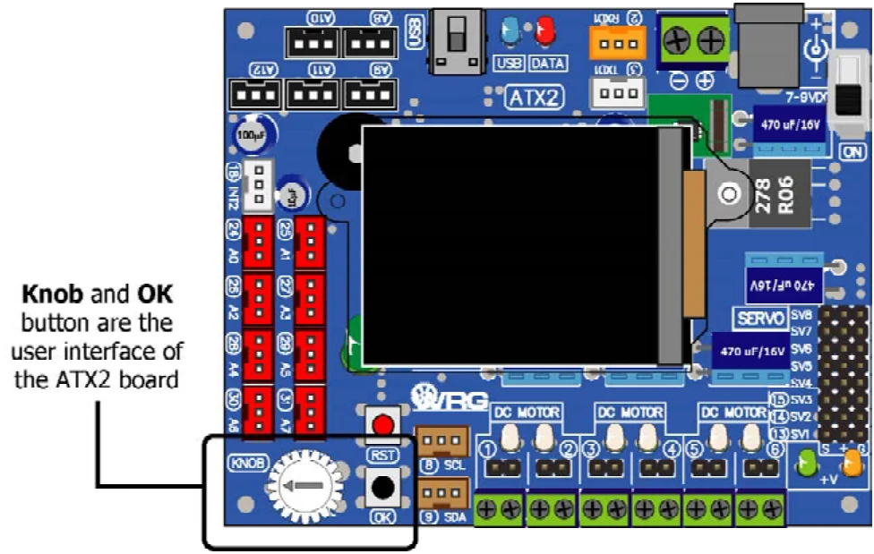

Activity 2 : Reading KNOB and OK button of the ATX2 board
Normal automatic control system must be configured with a switch in user interface hardware. The ATX2 board also provides the user interface hardware as well. It contains KNOB and OK button.

(A2.1) Create the new sketch with Listing A2-1 and save as to ATX2_OKbuttonKnobTest.ino.
(A2.2) Compile and upload to the ATX2 board then run the sketch.
ATX2 display shows below message :
Press OK(text size 2x)
(A2.3) Press the OK switch to continue.
GLCD monitor shows a yellow circle 1 second then show message :
Knob value(text size 2x)
XXXX(text size larger to 3x)
therefore; xxxx value is 94 to 1023
(A2.4) Adjust the KNOB button on the ATX2 board.
Knob’s value at the screen is changed following adjustment at KNOB button.
(A2.5) Press the OK switch and release.
GLCD shows the solid green circle 1 second then shows message and KNOB value.
#include <ATX2.h> // Include the main library
void setup()
{
//glcdSetColorWordRGB(); // Enable this function if displaying color
// incorrect
glcdClear(); // Clear screen and set black backgound
glcdMode(1); // Set display mode 1
setTextSize(2); // Set text size 2x
glcd(1,2,"Press OK"); // Show entry essage
sw_OK_press(); // Loop for pressing the OK switch
glcdClear(); // Clear screen and set black backgound
glcdFillCircle(64,70,50,GLCD_YELLOW); // Draw the solid yellow circle
delay(1000); // Show graphic 1 second
glcdClear(); // Clear screen and set black backgound
}
void loop()
{
if (sw_OK()) // Check the OK switch pressed
{
glcdClear(); // Clear screen and set black backgound
glcdFillCircle(64,70,50,GLCD_GREEN); // Draw the solid green circle
delay(1000); // Show graphic 1 second
glcdClear(); // Clear screen and set black backgound
}
glcd(1,2,"Knob value"); // Show message
setTextSize(3); // Set text size as 3x
glcd(2,2,"%d ",knob()); // Show the value of KNOB button
setTextSize(2); // Set text size 2x
}Original manual, pages 108–109